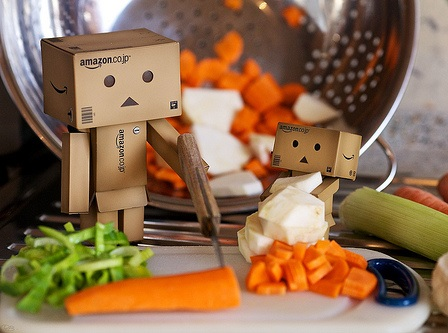

Iced Fruit Kebabs
You will need:
- - One whole watermelon
- - 3 large mangoes
- - 200g strawberries
- - 3 kiwi fruits
- - Any other fruits you want! Probably. Don't eat poisonous fruits. They're bad for you.
- - Some skewers! (Roughly 8)
- - A freezer
- - Cling wrap
Here's how you make 'em:
- 1. Remove the rind and seeds from the watermelon, cut into thick slices and using a shaped cutter, cut shapes from the flesh.
- 2. Cut the strawberries in half.
- 3. Remove the skin from the kiwi and cut into thick slices.
- 4. Thread the fruit onto bamboo skewers and place on a paper-lined non stick baking tray. Cover with plastic wrap and freeze until solid.
Back to recipes.